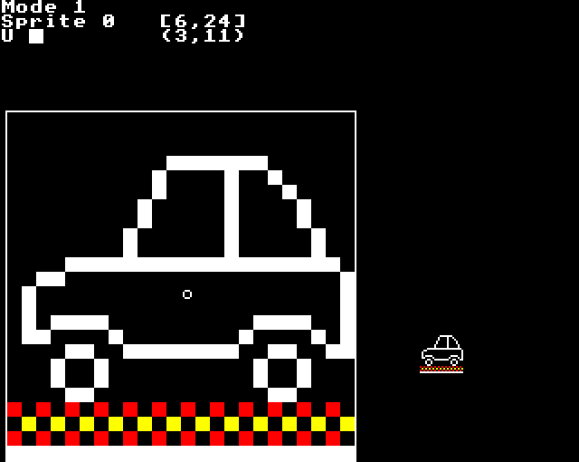

Full screen sprite editor - 4578 bytes (27.9%)
- §1. Sprite Editor
- §2. drawRectangleAroundSpriteInBlack
- §3. Draw rectangle around large sprite in the sprite editor
- §4. Get screen coordinates for the visible area of the current sprite
- §5. seditDrawLargeSpriteRow
- §6. seditDrawLargeSpriteColumn
- §7. seditDrawLargeSprite
- §8. Unplot the cursor, redraw regular and large sprites, then redraw the cursor
- §9. Draw (or undraw) the circular cursor in the sprite editor
- §10. seditDrawLargePixelRectangle
- §11. seditFinishMoveAndDrawLargePixelRectangle
- §12. Calculate address within sprite given (X, Y) pixel coordinates
- §13. seditXCoordinatePowerOf2
- §14. Get screen coordinates from sprite coordinates (.seditCurrentX, .seditCurrentY)
- §15. seditMoveToNextSpriteToDelete
- §16. *SDELETE
- §17. Delete a sprite
- §18. Add sprite
- §19. Redraw regular sized sprite
- §20. Sprite data for new sprite
- §21. *SEDIT n[,m]
- §22. Main sprite editor routine
- §23. Exit the sprite editor
- §24. Call the specific editing function
- §25. Sprite editor commands (function keys, COPY key, and cursor keys)
- §26. Delete a square shown in the large sprite
- §27. Copy key: set pixel to white
- §28. Check for pen down then set pixel
- §29. Write pixel into sprite
- §30. Copy visible area rectangle left or right
- §31. Copy visible area rectangle up or down
- §32. moveXMinus1YMinus1
- §33. MOVE vdu[X],vdu[Y]
- §34. PLOT X,vdu[.seditCurrentVisibleX],vdu[Y]
- §35. Copy a rectangle in the large sprite area
- §36. Move sprite cursor left
- §37. Move sprite cursor right
- §38. Move sprite cursor down
- §39. Move sprite cursor up
- §40. Move sprite cursor fully left
- §41. Shift sprite cursor left
- §42. Move sprite cursor fully right
- §43. Shift sprite cursor right
- §44. Move sprite cursor fully down
- §45. Shift sprite cursor down
- §46. Move sprite cursor fully up
- §47. Shift sprite cursor up
- §48. Deselect current sprite
- §49. Record the current sprite details in the private workspace
- §50. Extend the sprite to insert a new row
- §51. Rectangle fill in large sprite area
- §52. Extend the sprite to insert a new column
- §53. Remove a row from the sprite
- §54. Remove a column from the sprite
- §55. Extend a sprite
- §56. noRoomToExtendSprite
- §57. Reduce a sprite
- §58. Toggle pen up / down
- §59. Flood one column of sprite
- §60. Flood one row of sprite
- §61. Get the current pixel colour from a sprite returned as a solid colour byte
- §62. writeSpritePixelIfItsBackgroundColour
- §63. Insert row
- §64. Delete row
- §65. Print the following message
- §66. Insert column
- §67. Delete column
- §68. createMaskByteForPixelsToTheRight
- §69. Reverse the pixels in the byte
- §70. Mirror sprite vertically
- §71. Mirror sprite horizontally
- §72. incTempStoreDADB
- §73. incTempStoreDCDD
- §74. decTempStoreDADB
- §75. decTempStoreDCDD
- §76. Find the address of the given sprite
- §77. Move address to the start of the next sprite
- §78. Get the amount of free space remaining in the sprite data
- §79. Skips past any spaces on the command line
- §80. Read 8 bit number from user input string into A
- §81. badNumberError
- §82. PLOT X,
- §83. VDU plotPointX;
- §84. VDU plotPointY;
- §85. GCOL X,Y
- §86. 8 bit unsigned multiply, 16 bit result
- §87. Print sprite details (in editor)
- §88. Print the 8 bit number in A
- §89. Print the 16 bit number in XA
- §90. powersOfTenTable

§2. drawRectangleAroundSpriteInBlack.
.drawRectangleAroundSpriteInBlack = $a808 LDY #0 BEQ .drawRectangleAroundSprite ALWAYS branch .drawRectangleAroundSpriteInWhite = $a80c LDY #7 fall through...
§3. Draw rectangle around large sprite in the sprite editor.
On Entry: Y = logical colour to draw in .seditCurrentSpriteVisibleWidth: visible width of current sprite .seditCurrentSpriteVisibleHeight: visible height of current sprite
.drawRectangleAroundSprite = $a80e LDX #0 JSR .gcolXY GCOL 0,Y where Y=0 (black) or 7 (white) JSR .seditGetScreenCoordinatesForCurrentSprite JSR .printInlineCounted display following message !byte 8 length of message to print !text 25,4 PLOT 4 (MOVE) !word 15,7 PLOT 4,15,7 !byte 25,5 PLOT 5, JSR .seditOutputXCoordinate X, JSR .printInlineCounted display following message !byte 4 length of message to print !word 7 7 !byte 25,5 PLOT 5, JSR .seditOutputXCoordinate X, JSR .seditOutputYCoordinate Y JSR .printInlineCounted display following message !byte 4 length of message to print !text 25,5 } !word 15 } PLOT 5,15, JSR .seditOutputYCoordinate Y JSR .printInlineCounted display following message !byte 6 length of message to print !text 25,5 !word 15,7 PLOT 5,15,7 RTS
§4. Get screen coordinates for the visible area of the current sprite.
Calculates the screen coordinates of the large sprite rectangular area in the editor. On Entry: .seditCurrentSpriteVisibleWidth: visible width of current sprite .seditCurrentSpriteVisibleHeight: visible height of current sprite On Exit: .plotPointXLow/High: X screen coordinate .plotPointYLow/High: Y screen coordinate (Preserves current sprite position)
.seditGetScreenCoordinatesForCurrentSprite = $a849 LDA .seditCurrentVisibleY } PHA } Remember current position in sprite LDA .seditCurrentVisibleX } PHA } LDA .seditCurrentSpriteVisibleHeight } STA .seditCurrentVisibleY } currentY = sprite visible height+1 LDA .seditCurrentSpriteVisibleWidth } STA .seditCurrentVisibleX } currentX = sprite visible width+1 INC .seditCurrentVisibleX } INC .seditCurrentVisibleY } JSR .seditGetScreenCoordinates PLA } STA .seditCurrentVisibleX } Recall current position in sprite PLA } STA .seditCurrentVisibleY } RTS
.seditDrawLargeSpriteRow = $a86f Set GCOL 0 mode LDA #0 STA .vduForegroundGCOLMode Column zero STA .seditCurrentVisibleX Get screen coordinates JSR .seditGetScreenCoordinates JSR .calculateCurrentSpriteByte Column zero LDA #0 STA .seditCurrentVisibleX .seditLoopBytesInRow = $a882 LDA .vduColourMaskLeft STA .seditCurrentVisibleByteMask store current byte mask LDY #0 LDA (.seditCurrentSpriteByteLow),Y load byte from sprite STA .vduWorkspaceI store current sprite byte .seditLoopPixelsInByte = $a88f LDA .vduWorkspaceI AND .vduColourMaskLeft STA .vduForegroundGraphicsColour Create byte of solid foreground colour LDX .vduPixelsPerByteMinusOne - LSR .vduForegroundGraphicsColour ORA .vduForegroundGraphicsColour DEX BNE - STA .vduForegroundGraphicsColour Plot rectangle for the pixel LDX #4 JSR .plotX PLOT 4 (MOVE) JSR .seditOutputXCoordinate X JSR .seditFinishMoveAndDrawLargePixelRectangle draw rectangle around Increment X coordinate, based on current mode SEC LDX .vduCurrentScreenMODE LDA .seditXCoordinateIncrement,X ADC .plotPointXLow STA .plotPointXLow BCC + INC .plotPointXHigh + Shift to move to next pixel and update byte mask ASL .vduWorkspaceI shift byte to next pixel LSR .seditCurrentVisibleByteMask move mask to next pixel within byte BCC .seditLoopPixelsInByte Move to next sprite byte (decrement sprite byte address) LDA .seditCurrentSpriteByteLow BNE + DEC .seditCurrentSpriteByteHigh + DEC .seditCurrentSpriteByteLow Move to next column INC .seditCurrentVisibleX Check if done all of row LDA .seditCurrentSpriteVisibleWidth CMP .seditCurrentVisibleX BCS .seditLoopBytesInRow RTS
§6. seditDrawLargeSpriteColumn.
.seditDrawLargeSpriteColumn = $a8e0 Set GCOL 0 mode LDA #0 STA .vduForegroundGCOLMode Row zero STA .seditCurrentVisibleY Get screen coordinates JSR .seditGetScreenCoordinates JSR .calculateCurrentSpriteByte .seditLoopRows = $a8ee JSR .getColourByteFromPixelOfSprite STA .vduForegroundGraphicsColour JSR .seditDrawLargePixelRectangle Add increment to Y coordinate SEC LDX .vduCurrentScreenMODE LDA .seditYCoordinateIncrement,X ADC .plotPointYLow STA .plotPointYLow BCC + INC .plotPointYHigh + Current sprite byte -= width in bytes LDY #0 CLC LDA .seditCurrentSpriteByteLow SBC (.currentSpriteDefinitionLow),Y STA .seditCurrentSpriteByteLow BCS + DEC .seditCurrentSpriteByteHigh + Increment visible Y INC .seditCurrentVisibleY LDA .seditCurrentSpriteVisibleHeight CMP .seditCurrentVisibleY compare current visible Y with visible height BCS .seditLoopRows if (not done yet) the branch (loop back) RTS
.seditDrawLargeSprite = $a922 Remember values VUW on stack LDA .seditCurrentVisibleY PHA LDA .seditCurrentVisibleX PHA LDA .seditCurrentVisibleByteMask PHA Loop through all visible rows of sprite, drawing each row LDA #0 STA .seditCurrentVisibleY .loopThroughRowsOfSprite = $a933 JSR .seditDrawLargeSpriteRow INC .seditCurrentVisibleY LDA .seditCurrentSpriteVisibleHeight CMP .seditCurrentVisibleY BCS .loopThroughRowsOfSprite Restore values VUW from stack PLA STA .seditCurrentVisibleByteMask PLA STA .seditCurrentVisibleX PLA STA .seditCurrentVisibleY RTS
§8. Unplot the cursor, redraw regular and large sprites, then redraw the cursor.
.seditDrawLargeAndRegularSpriteAndUpdateCursor = $a94e JSR .drawCircleCursor undraw cursor .seditDrawLargeAndRegularSpriteAndCursor = $a951 JSR .seditPlotRegularSizeSprite .seditDrawLargeSpriteAndCursor = $a954 JSR .seditDrawLargeSprite fall through...
§9. Draw (or undraw) the circular cursor in the sprite editor.
.drawCircleCursor = $a957 LDX #4 JSR .plotX PLOT 4 (MOVE) JSR .seditGetScreenCoordinates Get X coordinate of centre of circle to draw LDX .vduCurrentScreenMODE } LDA .seditXCoordinateIncrement,X } get size of the square for } displaying the current pixel LSR } halve it to get the centre point AY += screen X coordinate offset within the current sprite byte CLC } ADC .seditScreenXOffsetWithinCurrentByte } LDY .plotPointXHigh BCC + increment the high byte if needed INY + AY += plotPointXLow CLC ADC .plotPointXLow BCC + INY + Send X coordinate (low byte) for MOVE JSR .OSWRCH Send X coordinate (high byte) for MOVE TYA JSR .OSWRCH Get Y coordinate of centre of circle to draw LDA .seditYCoordinateIncrement,X } get size of the square for } displaying the current pixel LSR } halve it to get the centre point CLC ADC .plotPointYLow LDY .plotPointYHigh BCC + INY + Send Y coordinate (low and high) for MOVE JSR .OSWRCH TYA JSR .OSWRCH Draw circle JSR .printInlineCounted display following message !byte 9 length of message to print !byte 18,3,7 GCOL 3,7 (EOR, white) !text 25,145 } !word 0, 7 } PLOT 145,0,7 (Circle outline) JMP .calculateCurrentSpriteByte
§10. seditDrawLargePixelRectangle.
.seditDrawLargePixelRectangle = $a9a3 LDX #4 JSR .plotX PLOT 4, LDA .plotPointXLow } CLC } ADC .seditScreenXOffsetWithinCurrentByte } X is the low byte of the X } coordinate TAX } LDA .plotPointXHigh } ADC #0 } Y is the high byte of the X } coordinate TAY } TXA } JSR .OSWRCH } TYA } output X coordinate JSR .OSWRCH } fall through...
§11. seditFinishMoveAndDrawLargePixelRectangle.
.seditFinishMoveAndDrawLargePixelRectangle = $a9be JSR .seditOutputYCoordinate LDX #$61 JSR .plotX PLOT $61 (Rectangle, relative) LDX .vduCurrentScreenMODE } LDA .seditXCoordinateIncrement,X } JSR .OSWRCH } one X increment amount for the } width LDA #0 } JSR .OSWRCH } LDA .seditYCoordinateIncrement,X } JSR .OSWRCH } LDA #0 } one Y increment amount for the } height JMP .OSWRCH }
§12. Calculate address within sprite given (X, Y) pixel coordinates.
On Entry: .seditCurrentVisibleX: X pixel within visible area of sprite in editor .seditCurrentVisibleY: Y pixel within visible area of sprite in editor .seditCurrentX: pixel coordinate of the left edge of visible area of sprite in editor .seditCurrentY: pixel coordinate of the bottom edge of visible area of sprite in editor On Exit: .seditCurrentSpriteByteLow/High: address of current sprite byte
.calculateCurrentSpriteByte = $a9df LDY #.spriteHeaderOffsetWidth LDA (.currentSpriteDefinitionLow),Y TAX INX X = width Y value CLC LDA .seditCurrentVisibleY ADC .seditCurrentY TAY Y is cursor Y position We calculate the offset from the *end* of the sprite data backwards to the current byte in the sprite JSR .multiply8x8 result = X * Y = width * Y = offset from end of sprite backwards to current row of sprite result += X offset within the visible region CLC LDA .vduTempStoreDE ADC .seditCurrentVisibleX add the offset within the visible region LDX .vduTempStoreDF BCC + INX + result += current sprite pixel X within visible area CLC ADC .seditCurrentX left pixel coordinate of large sprite STA .vduTempStoreDE BCC + INX + STX .vduTempStoreDF [NOTE: instead of the above two additions, calculate .seditCurrentVisibleX + .seditCurrentX then add to DE/DF, i.e.: LDA .seditCurrentVisibleX CLC ADC .seditCurrentX ADC .vduTempStoreDE STA .vduTempStoreDE BCC + INC .vduTempStoreDF + ... to save eight bytes ] AX = start address of next sprite CLC LDY #.spriteHeaderOffsetSizeInBytesLow LDA (.currentSpriteDefinitionLow),Y ADC .currentSpriteDefinitionLow add current sprite address (low) PHA INY Y = .spriteHeaderOffsetSizeInBytesHigh LDA (.currentSpriteDefinitionLow),Y ADC .currentSpriteDefinitionHigh add current sprite address (high) TAX PLA Add 5 to sprite address to account for the six byte header of the current sprite, minus one because we want to start from the last byte of the current sprite data, not the first byte of the next sprite. CLC ADC #5 BCC + INX + .seditCurrentSpriteByteLow/High = next sprite address - result (note that result = vduDE/F = the offset backwards from end of current sprite data to the current sprite byte) SEC SBC .vduTempStoreDE STA .seditCurrentSpriteByteLow store current sprite byte address (low byte) TXA SBC .vduTempStoreDF STA .seditCurrentSpriteByteHigh store current sprite byte address (high byte) RTS
§13. seditXCoordinatePowerOf2.
.seditXCoordinatePowerOf2 = $aa26 MODE 0, 1, 2, 3, 4, 5 !byte 8, 7, 7, $FF, 8, 8 indexed by screen MODE (0-5) .seditMaximumVisibleHeight = $aa2c MODE 0, 1, 2, 3, 4, 5 !byte $0B, $17, $17, $FF, $17, $17 indexed by screen MODE (0-5) .seditMaximumVisibleWidth = $aa32 MODE 0, 1, 2, 3, 4, 5 !byte $02, $05, $05, $FF, $02, $02 indexed by screen MODE (0-5) This is how much we move in Y from one large square in the sprite editor to the next .seditYCoordinateIncrement = $aa38 MODE 0, 1, 2, 3, 4, 5 !byte $3F, $1F, $1F, $FF indexed by screen MODE (0-5) Overlaps 2 bytes into the next table This is how much we move in X (minus one) from one large square in the sprite editor to the next .seditXCoordinateIncrement = $aa3c MODE 0, 1, 2, 3, 4, 5 !byte $1F, $1F, $3F, $FF, $1F, $3F indexed by screen MODE (0-5) This is the initial OS coordinate offset in X for the first large square in any byte .seditXCoordinateOffsetForRightmostPixelInByte = $aa42 MODE 0, 1, 2, 3, 4, 5 !byte $E0, $60, $40, $FF, $E0, $C0 indexed by screen MODE (0-5)
§14. Get screen coordinates from sprite coordinates (.seditCurrentX, .seditCurrentY).
On Exit: .plotPointXLow/High = (.seditCurrentX * 256) + 16 for MODE 0,4,5 OR = (.seditCurrentX * 128) + 16 for MODE 1,2 .plotPointYLow/High = (.seditCurrentY * 64) + 8 for MODE 0 OR = (.seditCurrentY * 32) + 8 for MODE 1,2,4,5
.seditGetScreenCoordinates = $aa48 LDA #0 STA .plotPointXHigh high bytes start at zero STA .plotPointYHigh Loop to multiply by a power of two LDX .vduCurrentScreenMODE LDA .seditXCoordinatePowerOf2,X TAX loop counter LDA .seditCurrentVisibleX coordinate low byte - ASL double low byte ROL .plotPointXHigh double high byte (with carry) DEX BNE - loop back Add 16 ADC #16 STA .plotPointXLow LDA .plotPointXHigh ADC #0 STA .plotPointXHigh LDX #5 } LDA .vduCurrentScreenMODE } BNE + } if (MODE 0) then X = 6 else X = 5 LDX #6 } + Loop to multiply Y coordinate (A, .plotPointY) by a power of two i.e. Y coordinate << X X is the loop counter LDA .seditCurrentVisibleY - ASL } ROL .plotPointYHigh } Multiply A (from } .seditCurrentVisibleY) DEX } and .plotPointYHigh by 32 } (non-mode 0) BNE - } or 64 (mode 0) Add 8 to Y coordinate ADC #8 } add 8 STA .plotPointYLow } and store in plotPointYLow/High LDA .plotPointYHigh } ADC #0 } STA .plotPointYHigh } RTS [NOTE: Could be this for a 3 byte saving BCC + INC .plotPointYHigh + RTS ]
§15. seditMoveToNextSpriteToDelete.
.seditMoveToNextSpriteToDelete = $aa8f JSR .incTempStoreDADB move past the COMMA LDX .vduTempStoreDA } remcall user input LDY .vduTempStoreDB } address into XY fall through...
.starSDelete = $aa96 JSR .read8BitNumberIntoA TXA } PHA } TYA } push address to rest of string PHA } LDA .vduTempStoreDE JSR .deleteSpriteInternal PLA } TAY } recall address of rest of string PLA } TAX } JSR .skipLeadingSpaces STX .vduTempStoreDA STY .vduTempStoreDB LDY #0 LDA (.vduTempStoreDA),Y CMP #',' BEQ .seditMoveToNextSpriteToDelete if (comma found) then branch (move to next sprite to delete) RTS
On Entry: A: sprite number
.deleteSpriteInternal = $aab6 JSR .findSpriteA get sprite address STA .vduTempStoreDA STY .vduTempStoreDB CPX #0 [NOTE: redundant] BEQ .return7 if sprite not found, branch JSR .resetCurrentSpriteAddress reset address Reduce number of sprites SEC LDY #.workspaceOffsetNumberOfSprites } LDA (.privateWorkspaceLow),Y } get number of sprites SBC #1 reduce by one STA (.privateWorkspaceLow),Y store number of sprites DEX BEQ .return7 if (no sprites left) then return JSR .moveToNextSprite tempStoreDC/DD moves on to next sprite Copy all remaining sprites down to fill the gap - Get size of sprite CLC LDY #.spriteHeaderOffsetSizeInBytesLow } LDA (.vduTempStoreDC),Y } ADC #6 } 6 is size of sprite header STA .vduTempStoreDE } tempStoreDE/F = byte size of } sprite data INY } Y = } .spriteHeaderOffsetSizeInBytesHigh LDA (.vduTempStoreDC),Y } ADC #0 } STA .vduTempStoreDF } JSR .blockCopyMemoryIncrementing copy sprite data down in memory to fill gap DEX BNE - .return7 = $aae9 RTS
Used in *SGET and *SMERGE On Entry: .vduTempStoreDC/DD: address of sprite data to add
.addSprite = $aaea JSR .getPrivateWorkspaceAddress LDA .vduTempStoreDC } PHA } LDA .vduTempStoreDD } remember sprite address PHA } Delete existing sprite LDY #.spriteHeaderOffsetSpriteNumber } LDA (.vduTempStoreDC),Y } get sprite number JSR .deleteSpriteInternal PLA } STA .vduTempStoreDD } PLA } recall sprite address STA .vduTempStoreDC } Get size of sprite CLC } LDY #.spriteHeaderOffsetSizeInBytesLow } LDA (.vduTempStoreDC),Y } ADC #6 } STA .vduTempStoreDE } INY } DE/DF = size in bytes of sprite LDA (.vduTempStoreDC),Y } ADC #0 } STA .vduTempStoreDF } JSR .blockCopyMemoryIncrementing copy sprite data CLC LDY #.workspaceOffsetNumberOfSprites } LDA (.privateWorkspaceLow),Y } ADC #1 } increment number of sprites STA (.privateWorkspaceLow),Y } RTS
§19. Redraw regular sized sprite.
Used as part of reduce vertically and reduce horizontally
.seditClearAndReplotRegularSizeSprite = $ab1d JSR .printInlineCounted display following message !byte 12 length of message to print !byte 25,4 } MOVE 920,200 !word 920, 200 } !byte 25,$67 rectangle fill in background colour !word 1220,800 920,200 -> 1220,800 fall through... .seditPlotRegularSizeSprite = $ab2d JSR .getPrivateWorkspaceAddress LDY #.workspaceOffsetCurrentSpriteAddressLow LDA .currentSpriteDefinitionLow STA (.privateWorkspaceLow),Y INY LDA .currentSpriteDefinitionHigh STA (.privateWorkspaceLow),Y Plot sprite JSR .printInlineCounted display following message !byte 19 length of message to print !byte 24 set graphics window !word 936, 200 left, bottom !word 1200, 800 right, top !byte 18,0,7 white graphics foreground colour !byte 25, $ed plot sprite !word 936, 200 at x, y !byte 26 clear text and graphics windows RTS
§20. Sprite data for new sprite.
A (1 byte x 1 pixel) MODE 2 sprite with one byte of logical colour zero.
.newSpriteData = $ab53 Six byte sprite header !byte $00 width-1 !byte $00 height-1 !byte $01 } size in bytes !byte $00 } !byte $02 MODE number !byte $00 sprite number One byte of sprite data for a new sprite !byte $00 .notEnoughRoomError2 = $ab5a JMP .notEnoughRoomError [NOTE: redundant, caller should just JMP .notEnoughRoomError]
Edit sprite n, save as sprite m On Entry: XY: address of the rest of the command line
.starSEdit = $ab5d JSR .read8BitNumberIntoA read sprite number to edit STA .vduWorkspaceB 'edit' sprite number (n) STA .vduWorkspaceC 'save' sprite number (m) JSR .skipLeadingSpaces STX .vduTempStoreDA STY .vduTempStoreDB LDY #0 LDA (.vduTempStoreDA),Y CMP #',' BNE .skipSecondNumber if no comma, skip ahead JSR .incTempStoreDADB move past the COMMA LDX .vduTempStoreDA } LDY .vduTempStoreDB } read the second number JSR .read8BitNumberIntoA } STA .vduWorkspaceC second number, the 'save' sprite number (m) .skipSecondNumber = $ab82 LDA .vduWorkspaceC 'save' sprite number (m) CMP .vduWorkspaceB 'edit' sprite number (n) BEQ + JSR .deleteSpriteInternal delete 'save' sprite, ready to be overwritten + JSR .getPrivateWorkspaceAddress JSR .getFreeSpace DC/DD = end of used sprite memory address .vduTempStoreDA/B = .vduTempStoreDC/D (remember end of used sprite memory address) LDA .vduTempStoreDC STA .vduTempStoreDA LDA .vduTempStoreDD STA .vduTempStoreDB Check we can find the sprite LDA .vduWorkspaceB sprite number to find JSR .findSpriteA get address of sprite (into .vduTempStoreDC/DD) BEQ .couldNotFindSpriteToEdit LDA .vduWorkspaceB 'edit' sprite number (n) CMP .vduWorkspaceC 'save' sprite number (m) BNE .editSpriteDifferentFromSaveSprite if (different) then branch Store sprite *index* STX .vduWorkspaceD SEC LDY #.workspaceOffsetNumberOfSprites } LDA (.privateWorkspaceLow),Y } number of sprites -= sprite index SBC .vduWorkspaceD } i.e. number of sprites starting at } the one being edited STA (.privateWorkspaceLow),Y } .vduTempStoreDE/DF = .vduTempStoreDA/DB - .vduTempStoreDC/DD = end of used sprite memory address - address of current sprite = amount of memory from the end of the current sprite to end of all sprite data SEC LDA .vduTempStoreDA SBC .vduTempStoreDC STA .vduTempStoreDE LDA .vduTempStoreDB SBC .vduTempStoreDD STA .vduTempStoreDF Edit sprite JMP .seditInternal .couldNotFindSpriteToEdit = $abc8 LDA #<.newSpriteData STA .vduTempStoreDC LDA #>.newSpriteData STA .vduTempStoreDD .editSpriteDifferentFromSaveSprite = $abd0 LDA .vduTempStoreDF PHA LDA .vduTempStoreDE PHA Get size of sprite CLC LDY #.spriteHeaderOffsetSizeInBytesLow LDA (.vduTempStoreDC),Y ADC #6 STA .vduTempStoreDE INY LDA (.vduTempStoreDC),Y ADC #0 STA .vduTempStoreDF Compare sizes of sprites PLA CMP .vduTempStoreDE PLA SBC .vduTempStoreDF BCS .enoughRoom JMP .notEnoughRoomError2 .enoughRoom = $abf1 LDA #1 STA .vduWorkspaceD fall through...
§22. Main sprite editor routine.
Called once the parsing of the *SEDIT command is done and verification passes On Entry: .vduWorkspaceC: sprite number .vduWorkspaceD: sprite index .vduTempStoreDC/DD: address of current sprite .vduTempStoreDE/DF: length of sprite data
.seditInternal = $abf6 We copy the existing sprites to the end of sprite memory, leaving the maximum amount for the sprite we are about to edit. Find how far we can copy the sprite data in memory... .vduTempStoreDA/DB = currentSpriteDefinitionLow/High = end of allocated sprite memory - length of sprite data SEC LDY #.workspaceOffsetSpriteEndPage LDA #0 SBC .vduTempStoreDE STA .vduTempStoreDA STA .currentSpriteDefinitionLow LDA (.privateWorkspaceLow),Y SBC .vduTempStoreDF STA .vduTempStoreDB STA .currentSpriteDefinitionHigh Copy sprite data to the end of allocated sprite memory, so give the maximum amount of memory for editing the current sprite. JSR .blockCopyMemoryDecrementing copy .vduTempStoreDE/DF bytes from tempStoreDC/DD to tempStoreDA/DB Store the sprite number LDA .vduWorkspaceC sprite number LDY #.spriteHeaderOffsetSpriteNumber STA (.currentSpriteDefinitionLow),Y store JSR .getPrivateWorkspaceAddress JSR .rememberCurrentSpriteInWorkspace Store MODE in which the sprite was defined LDA .vduCurrentScreenMODE LDY #.spriteHeaderOffsetModeNumber STA (.currentSpriteDefinitionLow),Y LDY #.workspaceOffsetOptions LDA (.privateWorkspaceLow),Y AND #$FE clear bit 0 of options (pen up) STA (.privateWorkspaceLow),Y Set sprite cursor position to bottom left of sprite LDA #0 STA .seditCurrentX STA .seditCurrentY STA .seditCurrentVisibleX STA .seditCurrentVisibleY STA .seditScreenXOffsetWithinCurrentByte LDA .vduColourMaskLeft STA .seditCurrentVisibleByteMask Set white pen LDA #7 STA .seditBackgroundColour Find the sprite width that is visible on-screen while editing (depends on the current MODE). LDX .vduCurrentScreenMODE LDY #.spriteHeaderOffsetWidth LDA (.currentSpriteDefinitionLow),Y CMP .seditMaximumVisibleWidth,X BCC + LDA .seditMaximumVisibleWidth,X + STA .seditCurrentSpriteVisibleWidth Find the sprite height that is visible on-screen while editing (depends on the current MODE). INY LDA (.currentSpriteDefinitionLow),Y sprite height CMP .seditMaximumVisibleHeight,X BCC + LDA .seditMaximumVisibleHeight,X + STA .seditCurrentSpriteVisibleHeight JSR .printInlineCounted display following message !byte 15 length of message to print !byte 4 VDU 4 (write text at the text cursor) !byte 26 VDU 26 (reset text and graphics windows) !byte 17,128 VDU 17,128 (select black as background colour) !byte 12 VDU 12 (clear screen) !byte 23,1,0,0,0,0,0,0,0,0 VDU 23,1,0,0,0,0,0,0,0,0 (turn off cursor) LDA #4 } *FX 4,2 LDX #2 } disable cursor editing (edit keys } act as soft keys) JSR .OSBYTE } LDA #$E1 } LDX #$90 } *FX 225,$90,0 LDY #0 } expand function keys as $90 upwards JSR .OSBYTE } LDA #$E2 } LDX #$80 } *FX 226,$80,0 LDY #0 } expand SHIFT+function keys as $80 } upwards JSR .OSBYTE } LDA #$E3 } LDX #$A0 } *FX 227,$A0,0 LDY #0 } expand CTRL+function keys as $A0 } upwards JSR .OSBYTE } JSR .seditPrintModeMessage print "Mode " JSR .drawRectangleAroundSpriteInWhite JSR .seditDrawLargeAndRegularSpriteAndCursor .editingLoop = $aca2 JSR .seditPrintModeMessage update current status LDA #$0F } TAX } Flush keyboard buffer JSR .OSBYTE } JSR .OSRDCH wait for key press BCS .exitEditing carry set on ESCAPE CMP #$0D BNE + if (not RETURN key) then branch Handle RETURN key JSR .seditSetSquareColourA JMP .editingLoop + Check for DELETE key CMP #$7F BNE + if (not DELETE key) then branch Handle DELETE key JSR .seditDeleteSquare JMP .editingLoop + CMP #'0' BCC .editingLoop if (A < '0') then branch (loop back) CMP #'9'+1 BCC .editHandleDigit if (A <= '9') then branch CMP #'A' BCC .editingLoop if (A < 'A') then branch CMP #'F'+1 BCC .editHandleHexDigit if (A <= 'F') then branch CMP #'a' BCC .editingLoop if (A < 'a') then branch CMP #'f'+1 BCS .editContinueKeyChecks if (A >= 'f'+1) then branch SBC #$1F convert a-f to A-F (upper case) .editHandleHexDigit = $acde SEC SBC #7 adjust value of hex digit A-F .editHandleDigit = $ace1 SEC SBC #'0' convert hex digit to value 0-15 STA .seditBackgroundColour set background colour JMP .editingLoop .editContinueKeyChecks = $acea CMP #$80 BCC .editingLoop if (A < $80) then branch CMP #$B0 BCS .editingLoop if (A >= $B0) then branch Handle function key press ASL TAX JSR .seditCallEditingFunction JMP .editingLoop
.exitEditing = $acfa LDY #.spriteHeaderOffsetSpriteNumber LDA (.currentSpriteDefinitionLow),Y PHA remember workspace[sprite number] LDA .currentSpriteDefinitionLow STA .vduTempStoreDC LDA .currentSpriteDefinitionHigh STA .vduTempStoreDD JSR .deselectCurrentSprite LDX .vduWorkspaceD number of sprites JSR .addSpriteLoop PLA recall sprite number JSR .starSChooseInternal LDA #$7C JSR .OSBYTE *FX 124 (Reset ESCAPE flag) LDA #$E1 LDX #1 LDY #0 JSR .OSBYTE *FX 225,1,0 (Function keys) LDA #$E2 LDX #$80 LDY #0 JSR .OSBYTE *FX 226,128,0 (SHIFT function keys) LDA #$E3 LDX #$90 LDY #0 JSR .OSBYTE *FX 227,144,0 (CTRL function keys) LDA #4 JSR .OSWRCH VDU 4 LDA #4 LDX #0 LDY #0 JMP .OSBYTE *FX 4,0,0 (cursor key editing)
§24. Call the specific editing function.
On Entry: X is offset within table of function address
.seditCallEditingFunction = $ad42 lookup routine address LDA .seditRoutineTable,X STA .vduTempStoreDA LDA .seditRoutineTable + 1,X STA .vduTempStoreDB jump to routine JMP (.vduTempStoreDA)
§25. Sprite editor commands (function keys, COPY key, and cursor keys).
.seditRoutineTable = $ad4f !word .return 128 = SHIFT + f0 !word .return 129 = SHIFT + f1 !word .return 130 = SHIFT + f2 !word .seditReduceVertically 131 = SHIFT + f3 !word .seditReduceHorizontally 132 = SHIFT + f4 !word .seditDeleteRow 133 = SHIFT + f5 !word .seditDeleteColumn 134 = SHIFT + f6 !word .return 135 = SHIFT + f7 !word .return 136 = SHIFT + f8 !word .return 137 = SHIFT + f9 !word .return 138 = !word .return 139 = SHIFT + COPY !word .seditShiftCursorLeft 140 = SHIFT + cursor LEFT !word .seditShiftCursorRight 141 = SHIFT + cursor RIGHT !word .seditShiftCursorDown 142 = SHIFT + cursor DOWN !word .seditShiftCursorUp 143 = SHIFT + cursor UP !word .seditPenUpDown 144 = f0 !word .seditFloodRow 145 = f1 !word .seditFloodColumn 146 = f2 !word .seditExtendVertically 147 = f3 !word .seditExtendHorizontally 148 = f4 !word .seditInsertRow 149 = f5 !word .seditInsertColumn 150 = f6 !word .seditMirrorVertically 151 = f7 !word .seditMirrorHorizontally 152 = f8 !word .return 153 = f9 !word .return 154 = !word .seditCopy 155 = COPY !word .seditCursorLeft 156 = cursor LEFT !word .seditCursorRight 157 = cursor RIGHT !word .seditCursorDown 158 = cursor DOWN !word .seditCursorUp 159 = cursor UP !word .return 160 = CTRL + f0 !word .return 161 = CTRL + f1 !word .return 162 = CTRL + f2 !word .return 163 = CTRL + f3 !word .return 164 = CTRL + f4 !word .return 165 = CTRL + f5 !word .return 166 = CTRL + f6 !word .return 167 = CTRL + f7 !word .return 168 = CTRL + f8 !word .return 169 = CTRL + f9 !word .return 170 = !word .return 171 = CTRL + COPY !word .seditCtrlCursorLeft 172 = CTRL + cursor LEFT !word .seditCtrlCursorRight 173 = CTRL + cursor RIGHT !word .seditCtrlCursorDown 174 = CTRL + cursor DOWN !word .seditCtrlCursorUp 175 = CTRL + cursor UP
§26. Delete a square shown in the large sprite.
.seditDeleteSquare = $adaf LDA .seditBackgroundColour PHA push old background colour LDA #0 background colour black BEQ .seditCopyInternal ALWAYS branch
§27. Copy key: set pixel to white.
.seditCopy = $adb7 LDA .seditBackgroundColour PHA push old background colour LDA #7 background colour white .seditCopyInternal = $adbd STA .seditBackgroundColour JSR .seditSetSquareColourA PLA STA .seditBackgroundColour .return6 = $adc7 RTS
§28. Check for pen down then set pixel.
.seditSetPixelIfPenDown = $adc8 LDY #.workspaceOffsetOptions LDA (.privateWorkspaceLow),Y LSR BCC .return6 if pen up, return .seditSetSquareColourA = $adcf JSR .drawCircleCursor undraw cursor JSR .writeSpritePixel JSR .seditDrawLargePixelRectangle JSR .seditPlotRegularSizeSprite JMP .drawCircleCursor draw cursor
.writeSpritePixel = $adde LDX #0 LDY .seditBackgroundColour JSR .gcolXY set background colour LDA .vduForegroundGraphicsColour foreground colour AND .seditCurrentVisibleByteMask apply mask for current pixel STA .vduTempStoreDA store pixel colour Update pixel in sprite LDY #0 LDA (.seditCurrentSpriteByteLow),Y ORA .seditCurrentVisibleByteMask EOR .seditCurrentVisibleByteMask clear bits from byte mask ORA .vduTempStoreDA set bits for pixel colour STA (.seditCurrentSpriteByteLow),Y .return = $adfc RTS
§30. Copy visible area rectangle left or right.
On Entry: X: 0=move left 1=move right Y: X coordinate to move from
.moveVisibleAreaLeftOrRight = $adfd LDA .seditCurrentVisibleX } PHA } LDA .seditCurrentVisibleY } remember current position PHA } LDA .seditCurrentVisibleByteMask } PHA } TXA } PHA } TYA } remember X,Y PHA } LDY #0 JSR .moveXY source rectangle one corner PLA } TAX } X=original Y value (0=move left or } 1=move right) LDY .seditCurrentSpriteVisibleHeight INY Y = sprite height JSR .moveXMinus1YMinus1 source rectangle other corner PLA } A=original X value PHA } EOR #1 TAX X ^= 1 LDY #0 destination point (X,Y) JSR .seditCopyRectangleAbsolute PLA } TAX } X=original X value BEQ + LDX .seditCurrentSpriteVisibleWidth + STX .seditCurrentVisibleX LDA .seditScreenXOffsetWithinCurrentByte PHA LDA #0 STA .seditScreenXOffsetWithinCurrentByte LDA .vduColourMaskLeft STA .seditCurrentVisibleByteMask - JSR .seditDrawLargeSpriteColumn SEC LDX .vduCurrentScreenMODE LDA .seditXCoordinateIncrement,X ADC .seditScreenXOffsetWithinCurrentByte STA .seditScreenXOffsetWithinCurrentByte LSR .seditCurrentVisibleByteMask BCC - PLA STA .seditScreenXOffsetWithinCurrentByte JMP .restoreUVWAndDrawCursor
§31. Copy visible area rectangle up or down.
On Entry: X: 0=move down 1=move up Y: Y coordinate to move down from
.moveVisibleAreaUpOrDown = $ae5a LDA .seditCurrentVisibleX } PHA } LDA .seditCurrentVisibleY } remember current position PHA } LDA .seditCurrentVisibleByteMask } PHA } TXA } PHA } remember X LDX .seditCurrentSpriteVisibleWidth INX X=width JSR .moveXMinus1YMinus1 source rectangle (top right) PLA } PHA } recall X TAY Y = original X (0=move down or 1=move up) LDX #0 JSR .moveXY source rectangle (bottom left) PLA } PHA } recall X (0=move down or 1=move up) EOR #1 TAY Y = X^1 (reversed: 1=move down or 0=move up) LDX #0 destination point (X,Y) JSR .seditCopyRectangleAbsolute PLA recall X (0=move down or 1=move up) TAY BEQ + if move down, then cursor Y = 0 LDY .seditCurrentSpriteVisibleHeight else cursor Y = visible height + STY .seditCurrentVisibleY JSR .seditDrawLargeSpriteRow draw last row that was left behind by the move .restoreUVWAndDrawCursor = $ae8e PLA } STA .seditCurrentVisibleByteMask } PLA } recall current position STA .seditCurrentVisibleY } PLA } STA .seditCurrentVisibleX } JMP .drawCircleCursor draw cursor
.moveXMinus1YMinus1 = $ae9d STX .seditCurrentVisibleX STY .seditCurrentVisibleY LDX #4 JSR .plotX MOVE (X-1,Y-1) JSR .seditGetScreenCoordinates Decrement plotPointX LDA .plotPointXLow BNE + DEC .plotPointXHigh + DEC .plotPointXLow Decrement plotPointY LDA .plotPointYLow BNE + DEC .plotPointYHigh + DEC .plotPointYLow JMP .outputXYCoordinates
.moveXY = $aec4 STX .seditCurrentVisibleX LDX #4 MOVE plot type fall through...
§34. PLOT X,vdu[.seditCurrentVisibleX],vdu[Y].
.plotXY = $aec9 STY .seditCurrentVisibleY JSR .plotX JSR .seditGetScreenCoordinates .outputXYCoordinates = $aed2 JSR .seditOutputXCoordinate JMP .seditOutputYCoordinate
§35. Copy a rectangle in the large sprite area.
On Entry: X,Y: new visible cursor position
.seditCopyRectangleAbsolute = $aed8 STX .seditCurrentVisibleX Remember current sprite editor position on the stack (6 bytes) LDX #5 loop counter - LDA .seditCurrentVisibleByteMask,X PHA DEX BPL - LDX #$BE copy rectangle absolute JSR .plotXY Recall current sprite editor position from the stack (6 bytes) LDX #0 LDY #5 loop counter - PLA STA .seditCurrentVisibleByteMask,X INX DEY BPL - RTS
.seditCursorLeft = $aef6 JSR .seditSetPixelIfPenDown if pen down, then draw a pixel in the current foreground colour LDA .seditCurrentVisibleByteMask get pixel mask ASL shift mask for next pixel BCS .needToMoveToNewByteLeft if (need to move to new byte) then branch Moving within the current byte STA .seditCurrentVisibleByteMask JSR .drawCircleCursor undraw cursor Move X coordinate of cursor graphic one square left CLC LDX .vduCurrentScreenMODE LDA .seditScreenXOffsetWithinCurrentByte SBC .seditXCoordinateIncrement,X subtract .seditXCoordinateIncrement[currentMODE] STA .seditScreenXOffsetWithinCurrentByte JMP .drawCircleCursor draw cursor .needToMoveToNewByteLeft = $af15 LDA .seditCurrentVisibleX BEQ .moveVisibleAreaLeft if (cursor is on left edge of visible area) then branch Move cursor within existing visible area JSR .drawCircleCursor undraw cursor DEC .seditCurrentVisibleX move visible cursor left LDA .vduColourMaskRight } store the rightmost mask value STA .seditCurrentVisibleByteMask } LDX .vduCurrentScreenMODE LDA .seditXCoordinateOffsetForRightmostPixelInByte,X set initial X offset for circle STA .seditScreenXOffsetWithinCurrentByte JMP .drawCircleCursor draw cursor .moveVisibleAreaLeft = $af32 LDA .seditCurrentX BNE + if (not already on left edge of sprite) branch Already on left edge of sprite, so return RTS + JSR .drawCircleCursor undraw cursor DEC .seditCurrentX LDA .vduColourMaskRight } store rightmost mask value STA .seditCurrentVisibleByteMask } LDX .vduCurrentScreenMODE LDA .seditXCoordinateOffsetForRightmostPixelInByte,X set initial X offset for circle STA .seditScreenXOffsetWithinCurrentByte LDX #0 LDY .seditCurrentSpriteVisibleWidth JMP .moveVisibleAreaLeftOrRight
§37. Move sprite cursor right.
.seditCursorRight = $af55 JSR .seditSetPixelIfPenDown if pen down, then draw a pixel in the current foreground colour LDA .seditCurrentVisibleByteMask get pixel mask LSR shift to next pixel BCS .needToMoveToNewByteRight if (need to move to new byte) then branch STA .seditCurrentVisibleByteMask JSR .drawCircleCursor undraw cursor Move X coordinate of cursor graphic right SEC LDX .vduCurrentScreenMODE LDA .seditScreenXOffsetWithinCurrentByte ADC .seditXCoordinateIncrement,X STA .seditScreenXOffsetWithinCurrentByte JMP .drawCircleCursor draw cursor .needToMoveToNewByteRight = $af74 LDA .seditCurrentVisibleX CMP .seditCurrentSpriteVisibleWidth BEQ .moveVisibleAreaRight if (cursor is on right edge of visible area) then branch Move cursor within existing visible area JSR .drawCircleCursor undraw cursor INC .seditCurrentVisibleX move visible cursor right LDA .vduColourMaskLeft } store leftmost mask value STA .seditCurrentVisibleByteMask } LDA #0 STA .seditScreenXOffsetWithinCurrentByte zero offset of graphics cursor JMP .drawCircleCursor draw cursor .moveVisibleAreaRight = $af90 CLC ADC .seditCurrentX LDY #0 CMP (.currentSpriteDefinitionLow),Y compare with sprite width BNE .notOnRightEdge RTS .notOnRightEdge = $af9b JSR .drawCircleCursor undraw cursor INC .seditCurrentX LDA .vduColourMaskLeft STA .seditCurrentVisibleByteMask set mask to leftmost pixel mask LDA #0 STA .seditScreenXOffsetWithinCurrentByte LDX #1 LDY .seditCurrentSpriteVisibleWidth INY JMP .moveVisibleAreaLeftOrRight
.seditCursorDown = $afb5 JSR .seditSetPixelIfPenDown if pen down, then draw a pixel in the current foreground colour LDA .seditCurrentVisibleY BEQ .cursorIsAtBottomOfVisibleArea if (cursor is at bottom of visible area) then branch JSR .drawCircleCursor undraw cursor DEC .seditCurrentVisibleY move down JMP .drawCircleCursor draw cursor .cursorIsAtBottomOfVisibleArea = $afc6 LDA .seditCurrentY BNE .moveVisibleAreaDown if (visible area is not already at the bottom of the sprite) then branch RTS .moveVisibleAreaDown = $afcc JSR .drawCircleCursor undraw cursor DEC .seditCurrentY move visible area down one row LDX #0 move down LDY .seditCurrentSpriteVisibleHeight JMP .moveVisibleAreaUpOrDown
.seditCursorUp = $afda JSR .seditSetPixelIfPenDown if pen down, then draw a pixel in the current foreground colour LDA .seditCurrentVisibleY CMP .seditCurrentSpriteVisibleHeight BEQ .cursorIsAtTopOfVisibleArea if (cursor is at top of visible area) then branch JSR .drawCircleCursor undraw cursor INC .seditCurrentVisibleY move up JMP .drawCircleCursor draw cursor .cursorIsAtTopOfVisibleArea = $afee CLC ADC .seditCurrentY LDY #.spriteHeaderOffsetHeight CMP (.currentSpriteDefinitionLow),Y BNE .moveVisibleAreaUp if (visible area is not already at the top of the sprite) then branch RTS .moveVisibleAreaUp = $aff9 JSR .drawCircleCursor undraw cursor INC .seditCurrentY move visible area up one row LDX #1 move up LDY .seditCurrentSpriteVisibleHeight INY JMP .moveVisibleAreaUpOrDown
§40. Move sprite cursor fully left.
.seditCtrlCursorLeft = $b008 JSR .drawCircleCursor LDA #0 STA .seditCurrentX JSR .seditDrawLargeSprite JMP .seditSetVisibleCursorToLeftEdge
§41. Shift sprite cursor left.
.seditShiftCursorLeft = $b016 JSR .drawCircleCursor undraw cursor SEC LDA .seditCurrentX SBC #2 LDX .seditCurrentX BEQ .alreadyOnLeftEdge if (X already on left edge) then branch BCC .closeToLeftEdge if (X close to left edge) then branch STA .seditCurrentX .seditCurrentX -= 2 JMP .seditDrawLargeSpriteAndCursor .closeToLeftEdge = $b02c PHA remember new X LDA #0 STA .seditCurrentX set .seditCurrentX = 0 JSR .seditDrawLargeSprite PLA recall new X .alreadyOnLeftEdge = $b036 CLC ADC .seditCurrentVisibleX STA .seditCurrentVisibleX BPL .seditDrawCursor if (non-negative) then branch (visible cursor X is in range) .seditSetVisibleCursorToLeftEdge = $b03f LDA #0 STA .seditCurrentVisibleX STA .seditScreenXOffsetWithinCurrentByte LDA .vduColourMaskLeft .seditStoreByteMaskAndContinue = $b04a STA .seditCurrentVisibleByteMask .seditDrawCursor = $b04d JMP .drawCircleCursor draw cursor
§42. Move sprite cursor fully right.
.seditCtrlCursorRight = $b050 JSR .drawCircleCursor SEC LDY #0 LDA (.currentSpriteDefinitionLow),Y SBC .seditCurrentSpriteVisibleWidth STA .seditCurrentX JSR .seditDrawLargeSprite JMP .finishCursorRight
§43. Shift sprite cursor right.
.seditShiftCursorRight = $b064 JSR .drawCircleCursor undraw cursor SEC LDY #.spriteHeaderOffsetWidth } LDA (.currentSpriteDefinitionLow),Y } SBC .seditCurrentSpriteVisibleWidth } X = sprite width - visible width TAX } CLC LDA .seditCurrentX } ADC #2 } add 2 to current X CPX .seditCurrentX BEQ .alreadyOnRightEdge STX .seditCurrentX CMP .seditCurrentX BCS .closeToRightEdge STA .seditCurrentX JMP .seditDrawLargeSpriteAndCursor .closeToRightEdge = $b089 PHA remember new X coordinate JSR .seditDrawLargeSprite PLA recall new X coordinate .alreadyOnRightEdge = $b08e SEC SBC .seditCurrentX CLC ADC .seditCurrentVisibleX STA .seditCurrentVisibleX CMP .seditCurrentSpriteVisibleWidth } BEQ .seditDrawCursor } if (visible X <= sprite width) } then branch (visible cursor X is } in range) BCC .seditDrawCursor } .finishCursorRight = $b0a0 LDA .seditCurrentSpriteVisibleWidth STA .seditCurrentVisibleX LDX .vduCurrentScreenMODE LDA .seditXCoordinateOffsetForRightmostPixelInByte,X STA .seditScreenXOffsetWithinCurrentByte LDA .vduColourMaskRight BNE .seditStoreByteMaskAndContinue
§44. Move sprite cursor fully down.
.seditCtrlCursorDown = $b0b4 JSR .drawCircleCursor undraw cursor LDA #0 STA .seditCurrentY JSR .seditDrawLargeSprite JMP .setVisibleYToZeroAndContinue
§45. Shift sprite cursor down.
.seditShiftCursorDown = $b0c2 JSR .drawCircleCursor undraw cursor SEC } LDA .seditCurrentY } SBC #8 } currentY -= 8 LDX .seditCurrentY } BEQ .alreadyOnBottomEdge BCC .closeToBottomEdge STA .seditCurrentY JMP .seditDrawLargeSpriteAndCursor .closeToBottomEdge = $b0d8 PHA LDA #0 STA .seditCurrentY set to bottom edge JSR .seditDrawLargeSprite PLA .alreadyOnBottomEdge = $b0e2 CLC ADC .seditCurrentVisibleY STA .seditCurrentVisibleY BPL .finishCursorDown .setVisibleYToZeroAndContinue = $b0eb LDA #0 STA .seditCurrentVisibleY visible Y = bottom edge .finishCursorDown = $b0f0 JMP .drawCircleCursor draw cursor
§46. Move sprite cursor fully up.
.seditCtrlCursorUp = $b0f3 JSR .drawCircleCursor SEC LDY #.spriteHeaderOffsetHeight LDA (.currentSpriteDefinitionLow),Y SBC .seditCurrentSpriteVisibleHeight STA .seditCurrentY JSR .seditDrawLargeSprite JMP .setVisibleYToVisibleHeightAndContinue
.seditShiftCursorUp = $b107 JSR .drawCircleCursor undraw cursor SEC LDY #.spriteHeaderOffsetHeight LDA (.currentSpriteDefinitionLow),Y SBC .seditCurrentSpriteVisibleHeight TAX X=sprite height - visible height LDA .seditCurrentY ADC #7 CPX .seditCurrentY BEQ .alreadyOnTopEdge STX .seditCurrentY CMP .seditCurrentY BCS .closeToTopEdge STA .seditCurrentY JMP .seditDrawLargeSpriteAndCursor .closeToTopEdge = $b12b PHA remember new Y coordinate JSR .seditDrawLargeSprite PLA recall new Y coordinate .alreadyOnTopEdge = $b130 SEC SBC .seditCurrentY CLC ADC .seditCurrentVisibleY STA .seditCurrentVisibleY set new visible Y CMP .seditCurrentSpriteVisibleHeight BEQ .finishCursorUp BCC .finishCursorUp .setVisibleYToVisibleHeightAndContinue = $b142 LDA .seditCurrentSpriteVisibleHeight STA .seditCurrentVisibleY .finishCursorUp = $b148 JMP .drawCircleCursor
On Exit: Preserves Y
.deselectCurrentSprite = $b14b TYA } PHA } remember Y LDY #.workspaceOffsetChosenSpriteIndex LDA (.privateWorkspaceLow),Y STA .vduWorkspaceD store previously selected sprite index LDA #0 zero means no sprite selected STA (.privateWorkspaceLow),Y PLA } recall Y TAY } RTS
§49. Record the current sprite details in the private workspace.
.rememberCurrentSpriteInWorkspace = $b15b Remember address in workspace LDY #.workspaceOffsetChosenSpriteAddressLow } LDA .currentSpriteDefinitionLow } STA (.privateWorkspaceLow),Y } workspace[chosen sprite address] = } .currentSpriteDefinition INY } LDA .currentSpriteDefinitionHigh } STA (.privateWorkspaceLow),Y } Remember chosen sprite index in workspace INY Y=#.workspaceOffsetChosenSpriteIndex LDA .vduWorkspaceD STA (.privateWorkspaceLow),Y workspace[chosen sprite index] = .vduWorkspaceD RTS
§50. Extend the sprite to insert a new row.
.seditExtendVertically = $b16d LDY #.spriteHeaderOffsetHeight LDA (.currentSpriteDefinitionLow),Y get sprite height-1 CMP #254 BCS .return25 if (height>=255) then branch (return) DEY Y=0 JSR .seditExtendSpriteInDirectionY BCS .return25 if (cant extend) LDY #.spriteHeaderOffsetWidth LDA (.currentSpriteDefinitionLow),Y TAX INX X=sprite width TYA Y=0 .seditNewRowLoop = $b182 STA (.vduTempStoreDA),Y } INY } store zero bytes in the new row DEX } BNE .seditNewRowLoop } LDX .vduCurrentScreenMODE LDA .seditCurrentSpriteVisibleHeight CMP .seditMaximumVisibleHeight,X BCS .seditVisibleHeightIsAsBigAsItCanBe JSR .drawRectangleAroundSpriteInBlack remove current border (draw in black) INC .seditCurrentSpriteVisibleHeight increment visible height JSR .drawRectangleAroundSpriteInWhite draw new border (draw in white) .seditVisibleHeightIsAsBigAsItCanBe = $b19c CLC .return25 = $b19d RTS
§51. Rectangle fill in large sprite area.
.seditRectangleFillToCurrentXY = $b19e JSR .seditGetScreenCoordinatesForCurrentSprite LDX #$67 } JSR .plotX } PLOT $67,X,Y (rectangle fill) JSR .seditOutputXCoordinate } JSR .seditOutputYCoordinate } JMP .drawRectangleAroundSpriteInWhite
§52. Extend the sprite to insert a new column.
.seditExtendHorizontally = $b1af LDY #.spriteHeaderOffsetWidth LDA (.currentSpriteDefinitionLow),Y get sprite width-1 CMP #$FE BCS .return14 if (width >=255) then branch INY Y=#.spriteHeaderOffsetHeight JSR .seditExtendSpriteInDirectionY BCS .return14 Copy sprite bytes across each row LDY #.spriteHeaderOffsetHeight LDA (.currentSpriteDefinitionLow),Y TAX INX X=height (loop counter) DEY Y = 0 .copyOuterLoop = $b1c4 TYA STA (.vduTempStoreDA),Y JSR .incTempStoreDADB TXA PHA push loop counter LDA (.currentSpriteDefinitionLow),Y TAX Copy X bytes from .vduTempStoreDC/D to .vduTempStoreDA/B .copyLoop = $b1cf LDA (.vduTempStoreDC),Y STA (.vduTempStoreDA),Y JSR .incTempStoreDCDD JSR .incTempStoreDADB DEX BNE .copyLoop PLA get loop counter TAX DEX BNE .copyOuterLoop loop back until height bytes are copied Finish up LDX .vduCurrentScreenMODE LDA .seditCurrentSpriteVisibleWidth CMP .seditMaximumVisibleWidth,X BCS .seditVisibleWidthIsAsBigAsItCanBe JSR .drawRectangleAroundSpriteInBlack remove current border (draw in black) INC .seditCurrentSpriteVisibleWidth increment visible width JSR .drawRectangleAroundSpriteInWhite draw new border (draw in white) .seditVisibleWidthIsAsBigAsItCanBe = $b1f5 CLC .return14 = $b1f6 RTS
§53. Remove a row from the sprite.
On Exit: Carry flag: set if full large and small sprite redraw needed
.seditReduceVertically = $b1f7 SEC LDY #.spriteHeaderOffsetHeight LDA (.currentSpriteDefinitionLow),Y get sprite height - 1 BEQ .return26 if (sprite height == 1) then branch DEY Y=0 (remove a row) JSR .seditReduceInDirectionY JSR .drawCircleCursor undraw cursor JSR .seditClearAndReplotRegularSizeSprite SEC LDY #.spriteHeaderOffsetHeight LDA (.currentSpriteDefinitionLow),Y SBC .seditCurrentY CMP .seditCurrentVisibleY BCS .seditDontReduceCurrentVisibleY DEC .seditCurrentVisibleY reduce visibleY by one .seditDontReduceCurrentVisibleY = $b218 CMP .seditCurrentSpriteVisibleHeight BCS .seditDrawCursorAndPreserveCarry LDA .seditCurrentY BNE .reduceCurrentY DEC .seditCurrentSpriteVisibleHeight Clear rectangular area JSR .printInlineCounted display following message !byte 6 length of message to print !byte 25,4 !word 0,800 PLOT 4,0,800 JSR .seditRectangleFillToCurrentXY SEC BCS .seditDrawCursorAndPreserveCarry ALWAYS branch .reduceCurrentY = $b235 DEC .seditCurrentY INC .seditCurrentVisibleY JSR .seditDrawLargeSprite CLC .seditDrawCursorAndPreserveCarry = $b23f PHP remember carry JSR .drawCircleCursor draw cursor PLP recall carry .return26 = $b244 RTS
§54. Remove a column from the sprite.
.seditReduceHorizontally = $b245 LDY #.spriteHeaderOffsetWidth LDA (.currentSpriteDefinitionLow),Y get sprite width-1 BEQ .return26 if (sprite width == 1) then branch (return) LDA .currentSpriteDefinitionLow } STA .vduTempStoreDC } .vduTempStoreDC/DD = the current } sprite definition address LDA .currentSpriteDefinitionHigh } STA .vduTempStoreDD } JSR .moveToNextSprite .vduTempStoreDC/DD = next sprite address minus one JSR .decTempStoreDCDD = address of last byte of current sprite LDA .vduTempStoreDC } STA .vduTempStoreDA } .vduTempStoreDA/DB = address of } last byte of current sprite LDA .vduTempStoreDD } STA .vduTempStoreDB } Copy sprite data to the end of sprite the source and destination addresses start out the same, but at the end of each row we reduce the source pointer by one byte, removing a column of bytes from the data LDY #.spriteHeaderOffsetHeight LDA (.currentSpriteDefinitionLow),Y get sprite height-1 TAX INX X=sprite height (loop counter) LDY #0 [NOTE: Redundant] .seditReduceLoop = $b269 TXA PHA remember sprite height remaining LDY #.spriteHeaderOffsetWidth Y=0 LDA (.currentSpriteDefinitionLow),Y TAX X = sprite width-1 (inner loop counter) .seditCopyRowOfSpriteLoop = $b270 LDA (.vduTempStoreDC),Y STA (.vduTempStoreDA),Y JSR .decTempStoreDCDD JSR .decTempStoreDADB DEX decrement loop counter BNE .seditCopyRowOfSpriteLoop if more to do then loop back JSR .decTempStoreDCDD remove one byte from each row PLA } TAX } recall sprite height remaining and } decrement DEX } BNE .seditReduceLoop loop back if more to do LDY #1 Y=1 (remove a column) JSR .seditReduceInDirectionY actually remove the column JSR .drawCircleCursor remove cursor JSR .seditClearAndReplotRegularSizeSprite redraw small sprite SEC LDY #.spriteHeaderOffsetWidth LDA (.currentSpriteDefinitionLow),Y get sprite width-1 SBC .seditCurrentX take off the current X position PHA remember how many columns are to the right of the current X CMP .seditCurrentVisibleX BCS .seditSkipDecrementingVisibleX Update the visible X and other associated variables DEC .seditCurrentVisibleX LDA .vduColourMaskRight STA .seditCurrentVisibleByteMask LDX .vduCurrentScreenMODE LDA .seditXCoordinateOffsetForRightmostPixelInByte,X STA .seditScreenXOffsetWithinCurrentByte .seditSkipDecrementingVisibleX = $b2b0 PLA recall how many columns are to the right of the current X CMP .seditCurrentSpriteVisibleWidth BCS .seditFinishUp LDA .seditCurrentX BNE .seditSkipDecrementingVisibleWidth DEC .seditCurrentSpriteVisibleWidth Blank out old column JSR .printInlineCounted display following message !byte 6 length of message to print !text 25,4 !word 900,0 PLOT 4,900,0 JSR .seditRectangleFillToCurrentXY JMP .seditFinishUp .seditSkipDecrementingVisibleWidth = $b2ce DEC .seditCurrentX INC .seditCurrentVisibleX JSR .seditDrawLargeSprite .seditFinishUp = $b2d7 JMP .drawCircleCursor
On Entry: Y: 0 means extend by a column; 1 means extend by a row
.seditExtendSpriteInDirectionY = $b2da JSR .getPrivateWorkspaceAddress } JSR .deselectCurrentSprite } NOTE: These calls all preserve Y JSR .getFreeSpace } TYA TAX remember Y in X CLC } LDA .currentSpriteDefinitionLow } SBC (.currentSpriteDefinitionLow),Y } STA .vduTempStoreDA } .vduTempStoreDA/DB = current } sprite address - sprite width or } height LDA .currentSpriteDefinitionHigh } SBC #0 } STA .vduTempStoreDB } LDA .vduTempStoreDA } CMP .vduTempStoreDC } if (end of sprite memory < } tempStoreDA/DB) then branch (no } room to extend sprite) LDA .vduTempStoreDB } SBC .vduTempStoreDD } BCC .noRoomToExtendSprite } SEC } LDA (.currentSpriteDefinitionLow),Y } get sprite width or height LDY #.spriteHeaderOffsetSizeInBytesLow } add size of sprite ADC (.currentSpriteDefinitionLow),Y } to give our new size STA (.currentSpriteDefinitionLow),Y } INY } } Y=#.spriteHeaderOffsetSizeInBytesHigh LDA #0 } ADC (.currentSpriteDefinitionLow),Y } STA (.currentSpriteDefinitionLow),Y } TXA recall original Y EOR #1 flip to opposite direction: 1 to 0 and 0 to 1 TAY CLC } LDA #1 } also add the length in the } opposite direction (ie. the sprite } height or width)? ADC (.currentSpriteDefinitionLow),Y } STA (.currentSpriteDefinitionLow),Y } Shuffle addresses around: tempStoreDC/DD = current sprite address current sprite address = tempStoreDA/DB LDY #1 .seditShuffleAddressesLoop = $b319 LDA .currentSpriteDefinitionLow,Y STA .vduTempStoreDC,Y LDA .vduTempStoreDA,Y STA .currentSpriteDefinitionLow,Y DEY BPL .seditShuffleAddressesLoop Copy six bytes of memory from .vduTempStoreDC/DD to .vduTempStoreDA/DB i.e. this copies the sprite header LDA #6 STA .vduTempStoreDE LDA #0 STA .vduTempStoreDF JSR .blockCopyMemoryIncrementing copy from .vduTempStoreDC/DD to .vduTempStoreDA/DB JSR .rememberCurrentSpriteInWorkspace CLC RTS
.noRoomToExtendSprite = $b338 JSR .rememberCurrentSpriteInWorkspace JSR .printInlineCounted display following message !byte 9 length of message to print !text $07,"No room",$0D LDA #$0F TAX JSR .OSBYTE *FX 15,15 (Flush keyboard) LDA #$81 LDX #$96 LDY #0 JSR .OSBYTE read key for 150ms JSR .printInlineCounted display following message !byte 7 length of message to print !text " " SEC RTS
.seditReduceInDirectionY = $b364 JSR .deselectCurrentSprite TYA TAX CLC LDA (.currentSpriteDefinitionLow),Y STA .vduTempStoreDA LDY #2 LDA (.currentSpriteDefinitionLow),Y SBC .vduTempStoreDA STA (.currentSpriteDefinitionLow),Y INY LDA (.currentSpriteDefinitionLow),Y SBC #0 STA (.currentSpriteDefinitionLow),Y SEC LDA .currentSpriteDefinitionLow STA .vduTempStoreDC ADC .vduTempStoreDA STA .vduTempStoreDA STA .currentSpriteDefinitionLow LDA .currentSpriteDefinitionHigh STA .vduTempStoreDD ADC #0 STA .vduTempStoreDB STA .currentSpriteDefinitionHigh LDA #6 STA .vduTempStoreDE LDA #0 STA .vduTempStoreDF JSR .blockCopyMemoryDecrementing TXA EOR #1 TAY Y=X^1 SEC LDA (.currentSpriteDefinitionLow),Y SBC #1 decrement STA (.currentSpriteDefinitionLow),Y JMP .rememberCurrentSpriteInWorkspace
.seditPenUpDown = $b3ab LDY #.workspaceOffsetOptions LDA (.privateWorkspaceLow),Y EOR #1 flip bit 0 of options STA (.privateWorkspaceLow),Y RTS
§59. Flood one column of sprite.
.seditFloodColumn = $b3b4 JSR .drawCircleCursor undraw current cursor LDA .seditCurrentVisibleY PHA remember current visible Y CLC LDA .seditCurrentY get sprite pixel Y for bottom left of visible area of sprite ADC .seditCurrentVisibleY add sprite pixel Y offset within the visible area STA .seditCurrentVisibleY store current Y sprite pixel PHA remember it LDA .seditCurrentSpriteByteLow } PHA } remember address of current sprite } data LDA .seditCurrentSpriteByteHigh } PHA } JSR .getColourByteFromPixelOfSprite JSR .writeSpritePixel .floodColumnUpLoop = $b3d2 LDY #.spriteHeaderOffsetHeight LDA .seditCurrentVisibleY CMP (.currentSpriteDefinitionLow),Y check if we have reached the height of the sprite LDY #.spriteHeaderOffsetWidth BCS .floodColumnDown INC .seditCurrentVisibleY Subtract width from sprite data address CLC LDA .seditCurrentSpriteByteLow SBC (.currentSpriteDefinitionLow),Y STA .seditCurrentSpriteByteLow BCS + DEC .seditCurrentSpriteByteHigh + JSR .writeSpritePixelIfItsBackgroundColour BCC .floodColumnUpLoop .floodColumnDown = $b3f0 PLA } STA .seditCurrentSpriteByteHigh } recall original sprite address PLA } and Y sprite pixel STA .seditCurrentSpriteByteLow } PLA } STA .seditCurrentVisibleY } .floodColumnDownLoop = $b3fa LDY #0 LDA .seditCurrentVisibleY BEQ .floodColumnFinishUp DEC .seditCurrentVisibleY Add width to sprite data address SEC LDA .seditCurrentSpriteByteLow ADC (.currentSpriteDefinitionLow),Y STA .seditCurrentSpriteByteLow BCC + INC .seditCurrentSpriteByteHigh + JSR .writeSpritePixelIfItsBackgroundColour BCC .floodColumnDownLoop .floodColumnFinishUp = $b414 JSR .seditPlotRegularSizeSprite plot the regular size sprite JSR .seditDrawLargeSpriteColumn draw new large sprite column PLA STA .seditCurrentVisibleY JMP .drawCircleCursor draw current cursor
.seditFloodRow = $b421 JSR .drawCircleCursor undraw current cursor Remember current visible X and byte mask (twice) LDA .seditCurrentVisibleX PHA LDA .seditCurrentVisibleByteMask PHA PHA CLC LDA .seditCurrentX get sprite pixel X for bottom left of visible area of sprite ADC .seditCurrentVisibleX add sprite pixel X offset within the visible area STA .seditCurrentVisibleX store current X sprite pixel PHA remember it LDA .seditCurrentSpriteByteLow } PHA } remember address of current sprite } data LDA .seditCurrentSpriteByteHigh } PHA } JSR .getColourByteFromPixelOfSprite JSR .writeSpritePixel .floodRowRightLoop = $b444 LSR .seditCurrentVisibleByteMask BCC .writePixel1 Start next byte going LDA .vduColourMaskLeft STA .seditCurrentVisibleByteMask LDY #.spriteHeaderOffsetWidth LDA .seditCurrentVisibleX CMP (.currentSpriteDefinitionLow),Y if (reached right edge of sprite) then branch BCS .floodRowLeft INC .seditCurrentVisibleX Decrement sprite byte (sprite bytes are stored right to left) LDA .seditCurrentSpriteByteLow BNE + DEC .seditCurrentSpriteByteHigh + DEC .seditCurrentSpriteByteLow .writePixel1 = $b463 JSR .writeSpritePixelIfItsBackgroundColour BCC .floodRowRightLoop .floodRowLeft = $b468 PLA } STA .seditCurrentSpriteByteHigh } PLA } STA .seditCurrentSpriteByteLow } restore original values after } filling right PLA } STA .seditCurrentVisibleX } PLA } STA .seditCurrentVisibleByteMask } .floodRowLeftLoop = $b476 ASL .seditCurrentVisibleByteMask BCC .writePixel2 LDA .vduColourMaskRight STA .seditCurrentVisibleByteMask LDY #0 LDA .seditCurrentVisibleX BEQ .floodRowFinishUp if (at left edge of sprite) then branch Move left one pixel DEC .seditCurrentVisibleX Add one to sprite byte address (sprites are stored right to left) INC .seditCurrentSpriteByteLow BNE .writePixel2 INC .seditCurrentSpriteByteHigh .writePixel2 = $b491 JSR .writeSpritePixelIfItsBackgroundColour BCC .floodRowLeftLoop .floodRowFinishUp = $b496 JSR .seditPlotRegularSizeSprite plot the regular size sprite JSR .seditDrawLargeSpriteRow draw new large sprite row PLA } STA .seditCurrentVisibleByteMask } restore byte mask and X position PLA } STA .seditCurrentVisibleX } JMP .drawCircleCursor draw current cursor
§61. Get the current pixel colour from a sprite returned as a solid colour byte.
.getColourByteFromPixelOfSprite = $b4a7 LDY #0 LDA (.seditCurrentSpriteByteLow),Y sprite byte AND .seditCurrentVisibleByteMask mask off what isn't the current pixel STA .vduWorkspaceA Shift pixel value up to the top bits LDA .seditCurrentVisibleByteMask BMI + .updateMaskLoop = $b4b6 ASL .vduWorkspaceA ASL shift mask value up too BPL .updateMaskLoop Shift pixel down the byte, making each pixel the same colour, so we end up with a byte of solid colour based on the pixel from the sprite + LDX .vduPixelsPerByteMinusOne LDA .vduWorkspaceA .updateSpriteByteLoop = $b4c2 LSR ORA .vduWorkspaceA DEX BNE .updateSpriteByteLoop STA .vduWorkspaceA RTS
§62. writeSpritePixelIfItsBackgroundColour.
.writeSpritePixelIfItsBackgroundColour = $b4cd LDY #0 LDA (.seditCurrentSpriteByteLow),Y read sprite byte EOR .vduWorkspaceA EOR with background colour AND .seditCurrentVisibleByteMask apply mask SEC BNE .return19 if (not background colour) then branch (return) Sprite pixel is background colour, write new pixel there JSR .writeSpritePixel CLC .return19 = $b4de RTS
.seditInsertRow = $b4df JSR .seditExtendVertically BCS .return27 if (no room to extend) then branch (return) CLC } LDA .currentSpriteDefinitionLow } ADC #5 } STA .vduTempStoreDC } tempStoreDC/DD = current sprite } address + 5 LDA .currentSpriteDefinitionHigh } ADC #0 } STA .vduTempStoreDD } LDY #.spriteHeaderOffsetHeight } SEC } LDA (.currentSpriteDefinitionLow),Y } SBC .seditCurrentY } X = (sprite height - current } position) SEC } i.e. the number of rows above the } current row SBC .seditCurrentVisibleY } DEY } Y = 0 TAX } .seditInsertRowLoop = $b4ff LDA .vduTempStoreDC STA .vduTempStoreDA SEC LDA (.currentSpriteDefinitionLow),Y sprite width-1 TAY INY Y=sprite width (loop counter) ADC .vduTempStoreDC } STA .vduTempStoreDC } .vduTempStoreDC/DD = source LDA .vduTempStoreDD } .vduTempStoreDA/DB = destination STA .vduTempStoreDB } BCC .seditCopyRowLoop } INC .vduTempStoreDD } .seditCopyRowLoop = $b514 LDA (.vduTempStoreDC),Y STA (.vduTempStoreDA),Y DEY BNE .seditCopyRowLoop DEX BNE .seditInsertRowLoop Store zeroes in the newly inserted row Y=0 here LDA (.currentSpriteDefinitionLow),Y get sprite width-1 TAY INY Y=sprite width .seditClearNewRowLoop = $b522 LDA #0 STA (.vduTempStoreDC),Y DEY BNE .seditClearNewRowLoop JMP .seditDrawLargeAndRegularSpriteAndUpdateCursor .return27 = $b52c RTS
.seditDeleteRow = $b52d LDY #.spriteHeaderOffsetHeight LDA (.currentSpriteDefinitionLow),Y get sprite height-1 BEQ .return28 if (sprite height == 1) then branch (return) SEC } SBC .seditCurrentY } SEC } Y = sprite height - current } position SBC .seditCurrentVisibleY } BEQ .deleteRowAndUpdate if (removing the top row) then branch Need to copy data TAX X = number of rows to move (loop counter) DEY Y = #.spriteHeaderOffsetWidth LDA (.currentSpriteDefinitionLow),Y get sprite width-1 TAY INY Y=sprite width JSR .multiply8x8 .vduTempStoreDE/DF = (number of rows to move) * (sprite width) tempStoreDC/DD = current sprite definition + number of bytes to move CLC LDA .currentSpriteDefinitionLow ADC .vduTempStoreDE STA .vduTempStoreDC LDA .currentSpriteDefinitionHigh ADC .vduTempStoreDF STA .vduTempStoreDD LDA .vduTempStoreDC ADC #5 STA .vduTempStoreDC BCC + INC .vduTempStoreDD + Copy bytes from tempStoreDC/DD to tempStroeDA/DB LDY #.spriteHeaderOffsetWidth .copySpriteDataForDeleteRow = $b55f CLC } LDA .vduTempStoreDC } STA .vduTempStoreDA } } .vduTempStoreDA/DB=.vduTempStoreDC/DD SBC (.currentSpriteDefinitionLow),Y } .vduTempStoreDC/DD=-width STA .vduTempStoreDC } LDA .vduTempStoreDD } STA .vduTempStoreDB } SBC #0 } STA .vduTempStoreDD } LDA (.currentSpriteDefinitionLow),Y TAY INY Y = sprite width (loop counter) - LDA (.vduTempStoreDC),Y copy sprite data for row STA (.vduTempStoreDA),Y DEY BNE - DEX BNE .copySpriteDataForDeleteRow .deleteRowAndUpdate = $b57e JSR .seditReduceVertically BCC .return28 JMP .seditDrawLargeAndRegularSpriteAndUpdateCursor .return28 = $b586 RTS
§65. Print the following message.
First byte of following data is a count of the characters X and Y are preserved
.printInlineCounted = $b587 PLA } STA .vduTempStoreDA } PLA } get address of following data from } stack STA .vduTempStoreDB } (minus one) TXA } PHA } TYA } Remember current XY PHA } JSR .incTempStoreDADB increment pointer to point at data itself LDY #0 LDA (.vduTempStoreDA),Y TAX count of number of bytes JSR .incTempStoreDADB .printCharacterLoop = $b59c LDA .vduTempStoreDA } PHA } LDA .vduTempStoreDB } remember tempStoreDA/DB PHA } LDA (.vduTempStoreDA),Y load character JSR .OSWRCH print character PLA } STA .vduTempStoreDB } PLA } restore tempStoreDA/DB STA .vduTempStoreDA } JSR .incTempStoreDADB move to next character DEX decrement counter BNE .printCharacterLoop if (not finished) then branch PLA } TAY } PLA } Restore XY TAX } JMP (.vduTempStoreDA) return to following instruction
.seditInsertColumn = $b5ba JSR .createMaskByteForPixelsToTheRight STA .vduTempStoreDC LDY #.spriteHeaderOffsetHeight LDA (.currentSpriteDefinitionLow),Y TAX INX X=sprite height CLC LDA .currentSpriteDefinitionLow } ADC #5 } STA .vduTempStoreDA } tempStoreDA/DB = sprite address + 5 LDA .currentSpriteDefinitionHigh } ADC #0 } STA .vduTempStoreDB } SEC } LDY #.spriteHeaderOffsetWidth } LDA (.currentSpriteDefinitionLow),Y } SBC .seditCurrentX } .vduTempStoreDF = width - current } position SEC } = number of bytes } to the right of the current } position SBC .seditCurrentVisibleX } STA .vduTempStoreDF } INC .vduTempStoreDF } .insertColumnLoop = $b5e2 TXA } remember X (the sprite height } remaining, the loop counter) on } the stack PHA } LDY .vduTempStoreDF LDA (.vduTempStoreDA),Y get sprite byte PHA remember it on the stack ORA .vduTempStoreDC OR with mask of pixels to the right EOR .vduTempStoreDC EOR to get the pixels to the left only STA .vduTempStoreDE store result LDA (.vduTempStoreDA),Y get sprite byte again AND .vduTempStoreDC ORA .vduColourMaskRight EOR .vduColourMaskRight LSR shift byte right to move the pixels ORA .vduTempStoreDE add contribution from previous byte STA (.vduTempStoreDA),Y store back in sprite byte PLA recall sprite byte AND .vduColourMaskRight Shift A left by pixels per byte-1 LDX .vduPixelsPerByteMinusOne - ASL DEX BNE - STA .vduTempStoreDE DEY BEQ .seditInsertColumnGotoNextRow if (end of row) then branch .insertColumnLoop2 = $b60e LDA (.vduTempStoreDA),Y read sprite byte PHA ORA .vduColourMaskRight EOR .vduColourMaskRight LSR ORA .vduTempStoreDE STA (.vduTempStoreDA),Y store back in sprite byte PLA recall original sprite byte AND .vduColourMaskRight Shift A left by pixels per byte-1 LDX .vduPixelsPerByteMinusOne - ASL DEX BNE - STA .vduTempStoreDE store pixel from the previous byte DEY BNE .insertColumnLoop2 .seditInsertColumnGotoNextRow = $b62c LDY #.spriteHeaderOffsetWidth } SEC } LDA .vduTempStoreDA } add sprite width to tempStoreDA/DB ADC (.currentSpriteDefinitionLow),Y } STA .vduTempStoreDA } LDA .vduTempStoreDB } ADC #0 } STA .vduTempStoreDB } PLA } Recall loop counter X TAX } DEX BNE .insertColumnLoop JMP .seditDrawLargeAndRegularSpriteAndUpdateCursor
.seditDeleteColumn = $b643 JSR .createMaskByteForPixelsToTheRight STA .vduTempStoreDC LDY #1 LDA (.currentSpriteDefinitionLow),Y get sprite height-1 TAX INX X=sprite height tempStoreDA/DB = sprite address + 6 CLC LDA .currentSpriteDefinitionLow ADC #6 STA .vduTempStoreDA LDA .currentSpriteDefinitionHigh ADC #0 STA .vduTempStoreDB SEC LDY #.spriteHeaderOffsetWidth LDA (.currentSpriteDefinitionLow),Y get sprite width-1 SBC .seditCurrentX subtract current position SEC SBC .seditCurrentVisibleX STA .vduTempStoreDF .vduTempStoreDF = sprite width - current position i.e. number of columns to move .deleteColumnLoop = $b669 TXA } PHA } store loop counter (number of } columns remaining to move) LDA #0 STA .vduTempStoreDE .vduTempStoreDE holds the pixel from previous byte LDY .vduTempStoreDF BEQ .finishUpMovingRow LDY #0 .moveRowLoop = $b675 LDA (.vduTempStoreDA),Y get sprite byte PHA remember sprite byte ORA .vduColourMaskLeft EOR .vduColourMaskLeft ASL shift byte ORA .vduTempStoreDE STA (.vduTempStoreDA),Y store sprite byte PLA recall original sprite byte AND .vduColourMaskLeft Shift A right by pixels per byte-1 LDX .vduPixelsPerByteMinusOne - LSR DEX BNE - STA .vduTempStoreDE store pixel from the previous byte INY CPY .vduTempStoreDF BNE .moveRowLoop .finishUpMovingRow = $b695 Move last byte of row LDA (.vduTempStoreDA),Y ORA .vduTempStoreDC EOR .vduTempStoreDC ORA .vduTempStoreDE STA .vduTempStoreDE LDA (.vduTempStoreDA),Y AND .vduTempStoreDC ORA .seditCurrentVisibleByteMask EOR .seditCurrentVisibleByteMask ASL ORA .vduTempStoreDE STA (.vduTempStoreDA),Y Add width to current address LDY #.spriteHeaderOffsetWidth } SEC } LDA .vduTempStoreDA } ADC (.currentSpriteDefinitionLow),Y } STA .vduTempStoreDA } .vduTempStoreDA/DB += width LDA .vduTempStoreDB } ADC #0 } STA .vduTempStoreDB } PLA } Recall loop counter (number of } columns remaining to move) TAX } DEX decrement loop counter BNE .deleteColumnLoop loop back if not yet done JMP .seditDrawLargeAndRegularSpriteAndUpdateCursor
§68. createMaskByteForPixelsToTheRight.
.createMaskByteForPixelsToTheRight = $b6c5 LDA .seditCurrentVisibleByteMask STA .vduTempStoreDC store current pixel mask - ORA .vduTempStoreDC } OR in the new value STA .vduTempStoreDC } LSR shift right BCC - loop until a set pixel is found LDA .vduTempStoreDC RTS
§69. Reverse the pixels in the byte.
Used when mirroring vertically
.reversePixelsInByteA = $b6d4 LDY #0 STY .vduTempStoreDE LDY .vduPixelsPerByteMinusOne loop counter - ASL .vduTempStoreDE PHA remember A AND .vduColourMaskRight ORA .vduTempStoreDE STA .vduTempStoreDE PLA recall A LSR shift A right DEY BPL - loop back until done LDA .vduTempStoreDE RTS
§70. Mirror sprite vertically.
.seditMirrorVertically = $b6ed CLC LDA .currentSpriteDefinitionLow ADC #5 STA .vduTempStoreDA LDA .currentSpriteDefinitionHigh ADC #0 STA .vduTempStoreDB LDY #.spriteHeaderOffsetHeight LDA (.currentSpriteDefinitionLow),Y CLC ADC #1 TAX .mirrorVerticallyLoop = $b702 CLC } LDY #.spriteHeaderOffsetWidth } LDA (.currentSpriteDefinitionLow),Y } A = sprite width - 1 ADC #2 } A = sprite width + 1 STA .vduTempStoreDD } LSR } STA .vduTempStoreDC } INC .vduTempStoreDD } .vduTempStoreDC = (sprite width + } 1)/2] = byte left of centre point = destination offset LSR .vduTempStoreDD } .vduTempStoreDD = (sprite width + } 2)/2 = byte right of centre point = source offset .mirrorRowLoop = $b712 Swap two bytes, reversing the pixels in each byte also LDY .vduTempStoreDC LDA (.vduTempStoreDA),Y JSR .reversePixelsInByteA PHA remember byte LDY .vduTempStoreDD LDA (.vduTempStoreDA),Y read source byte JSR .reversePixelsInByteA reverse it LDY .vduTempStoreDC STA (.vduTempStoreDA),Y store in destination PLA recall byte LDY .vduTempStoreDD STA (.vduTempStoreDA),Y store in source INC .vduTempStoreDD DEC .vduTempStoreDC BNE .mirrorRowLoop Add width to the current address SEC carry set, add one more than usual LDY #.spriteHeaderOffsetWidth LDA .vduTempStoreDA ADC (.currentSpriteDefinitionLow),Y add sprite width-1 STA .vduTempStoreDA BCC + INC .vduTempStoreDB + DEX decrement loop counter BNE .mirrorVerticallyLoop loop back until done JMP .seditDrawLargeAndRegularSpriteAndUpdateCursor
§71. Mirror sprite horizontally.
.seditMirrorHorizontally = $b743 CLC } LDA .currentSpriteDefinitionLow } STA .vduTempStoreDC } ADC #5 } .vduTempStoreDC/DD = sprite } definition address STA .vduTempStoreDA } .vduTempStoreDA/DB = sprite } definition address + 5 LDA .currentSpriteDefinitionHigh } STA .vduTempStoreDD } ADC #0 } STA .vduTempStoreDB } JSR .moveToNextSprite move address to start of next sprite JSR .decTempStoreDCDD move address back one to be the last byte of the current sprite .vduTempStoreDC/DD -= sprite width CLC carry clear, subtract one more than normal LDY #.spriteHeaderOffsetWidth LDA .vduTempStoreDC SBC (.currentSpriteDefinitionLow),Y STA .vduTempStoreDC BCS + DEC .vduTempStoreDD + LDY #.spriteHeaderOffsetHeight LDA (.currentSpriteDefinitionLow),Y A = sprite height-1 BEQ .skipMirrorVertically if (sprite has height 1) then branch CLC ADC #1 LSR TAX X = sprite height / 2 (loop counter) .mirrorHorizontalMainLoop = $b772 LDY #.spriteHeaderOffsetWidth LDA (.currentSpriteDefinitionLow),Y TAY INY Y = sprite width (loop counter) Swap row in top half of sprite with row in bottom half of sprite .mirrorRowHorizontalLoop = $b778 LDA (.vduTempStoreDA),Y PHA remember byte from top half LDA (.vduTempStoreDC),Y STA (.vduTempStoreDA),Y byte in top half = byte in bottom half PLA recall original byte from top half STA (.vduTempStoreDC),Y store in bottom half DEY decrement loop counter BNE .mirrorRowHorizontalLoop loop back until done Add sprite width to top half of sprite address SEC LDY #.spriteHeaderOffsetWidth LDA .vduTempStoreDA ADC (.currentSpriteDefinitionLow),Y STA .vduTempStoreDA BCC + INC .vduTempStoreDB + Subtract sprite width from bottom half address CLC LDA .vduTempStoreDC SBC (.currentSpriteDefinitionLow),Y STA .vduTempStoreDC BCS + DEC .vduTempStoreDD + DEX loop counter BNE .mirrorHorizontalMainLoop .skipMirrorVertically = $b7a0 JMP .seditDrawLargeAndRegularSpriteAndUpdateCursor
.incTempStoreDADB = $b7a3 INC .vduTempStoreDA BNE .return2 INC .vduTempStoreDB .return2 = $b7a9 RTS
.incTempStoreDCDD = $b7aa INC .vduTempStoreDC BNE .return2 INC .vduTempStoreDD RTS
.decTempStoreDADB = $b7b1 LDA .vduTempStoreDA BNE + DEC .vduTempStoreDB + DEC .vduTempStoreDA RTS
.decTempStoreDCDD = $b7ba LDA .vduTempStoreDC BNE + DEC .vduTempStoreDD + DEC .vduTempStoreDC RTS
§76. Find the address of the given sprite.
On Entry: A = sprite number to find On Exit: (A,Y): vduTempStoreDC/DD = start of sprite X: Sprite index (in the range 1 to number of sprites), or 0 for not found Z Set and X = 0 if we ran out of sprites
.findSpriteA = $b7c3 PHA remember sprite number address = start of sprite page + 3 LDY #.workspaceOffsetSpriteStartPage LDA (.privateWorkspaceLow),Y STA .vduTempStoreDD .vduTempStoreDD = sprite start page LDA #3 STA .vduTempStoreDC .vduTempStoreDC = 3 LDY #.workspaceOffsetNumberOfSprites LDA (.privateWorkspaceLow),Y TAX X = number of sprites = loop counter BEQ + - LDY #5 PLA PHA recall and remember sprite number CMP (.vduTempStoreDC),Y have we reached the sprite we want? BEQ + if (yes) then branch JSR .moveToNextSprite move .vduTempStoreDC/D to next sprite DEX BNE - if (X != 0) then branch (loop back) + PLA recall and discard the sprite number now LDA .vduTempStoreDC } LDY .vduTempStoreDD } get address in AY CPX #0 did we reach the end of the sprite list? RTS
§77. Move address to the start of the next sprite.
On Entry: .vduTempStoreDC/DD points to a sprite On Exit: .vduTempStoreDC/DD points to the next sprite Preserves X
.moveToNextSprite = $b7eb CLC } LDY #2 } LDA (.vduTempStoreDC),Y } ADC .vduTempStoreDC } PHA } INY } LDA (.vduTempStoreDC),Y } ADC .vduTempStoreDD } STA .vduTempStoreDD } .vduTempStoreDC/DD += size of } sprite + 6 PLA } ADC #6 } six is the size of the sprite } header data STA .vduTempStoreDC } BCC + } INC .vduTempStoreDD } + RTS
§78. Get the amount of free space remaining in the sprite data.
On Exit: .vduTempStoreDE/DF holds the free space in bytes .vduTempStoreDC/DD holds the end of used sprite memory address Preserves A,X,Y
.getFreeSpace = $b804 PHA } TXA } PHA } store A,X,Y TYA } PHA } LDY #.workspaceOffsetSpriteStartPage } LDA (.privateWorkspaceLow),Y } STA .vduTempStoreDD } .vduTempStoreDC/DD = sprite page } start + 3 LDA #3 } = initial space } used STA .vduTempStoreDC } LDY #.workspaceOffsetNumberOfSprites LDA (.privateWorkspaceLow),Y get number of sprites BEQ + if (no sprites) then branch TAX X = number of sprites = loop counter - JSR .moveToNextSprite DEX BNE - if (not done yet) then branch back + SEC LDY #.workspaceOffsetSpriteEndPage LDA #0 SBC .vduTempStoreDC STA .vduTempStoreDE LDA (.privateWorkspaceLow),Y free space = total space - space used SBC .vduTempStoreDD STA .vduTempStoreDF PLA } TAY } PLA } recall A,X,Y TAX } PLA } RTS
§79. Skips past any spaces on the command line.
On Entry: (X,Y): address of the current position in the command line On Exit: (X,Y): address of the rest of the command line
.skipLeadingSpaces = $b835 STX .privateWorkspaceLow } STY .privateWorkspaceHigh } store pointer to remainder of user } input string LDY #0 .skipSpaces = $b83b LDA (.privateWorkspaceLow),Y CMP #' ' BNE .nonSpace INC .privateWorkspaceLow BNE .skipSpaces INC .privateWorkspaceHigh JMP .skipSpaces .nonSpace = $b84a LDX .privateWorkspaceLow } LDY .privateWorkspaceHigh } set XY to the remainder of the } user input string JMP .getPrivateWorkspaceAddress get proper workspace address
§80. Read 8 bit number from user input string into A.
On Exit: XY = address of remainder of user input string A = .vduTempStoreDE = 8 bit value read
.read8BitNumberIntoA = $b851 JSR .skipLeadingSpaces STX .privateWorkspaceLow } workspace address is set to current STY .privateWorkspaceHigh } position in user input string LDY #0 STY .vduTempStoreDE result = 0 LDA (.privateWorkspaceLow),Y get next character SEC SBC #'0' convert ASCII digit to value 0-9 CMP #10 BCS .badNumberError if (10 or more) then branch (bad number) - Multiply the existing result by 10 TAX X = digit ASL .vduTempStoreDE } .vduTempStoreDE *= 2 BCS .badNumberError } LDA .vduTempStoreDE } ASL } BCS .badNumberError } ASL } A = .vduTempStoreDE * 4 BCS .badNumberError } ADC .vduTempStoreDE } A += .vduTempStoreDE STA .vduTempStoreDE } .vduTempStoreDE = A = } .vduTempStoreDE * 10 BCS .badNumberError } Add the digit in X to the result TXA } ADC .vduTempStoreDE } .vduTempStoreDE += digit STA .vduTempStoreDE } Branch if overflow occurs BCS .badNumberError Move to next digit INC .privateWorkspaceLow BNE + INC .privateWorkspaceHigh + Read the next digit LDA (.privateWorkspaceLow),Y SEC SBC #'0' CMP #10 BCC - branch back if there is another digit Get result in A, and XY is the address of the rest of the command LDA .vduTempStoreDE LDX .privateWorkspaceLow LDY .privateWorkspaceHigh JMP .getPrivateWorkspaceAddress
.badNumberError = $b897 JSR .generateError !byte $89 error number !text "Bad number",0 error message
On Entry: X: plot number
.plotX = $b8a6 LDA #$19 } JSR .OSWRCH } TXA } VDU 25,X, = PLOT X, JMP .OSWRCH }
.seditOutputXCoordinate = $b8af LDA .plotPointXLow JSR .OSWRCH LDA .plotPointXHigh JMP .OSWRCH
.seditOutputYCoordinate = $b8bb LDA .plotPointYLow JSR .OSWRCH LDA .plotPointYHigh JMP .OSWRCH
On Entry: X: GCOL mode Y: GCOL logical colour
.gcolXY = $b8c7 LDA #$12 } JSR .OSWRCH } TXA } JSR .OSWRCH } VDU 18,X,Y = GCOL X,Y TYA } JMP .OSWRCH }
§86. 8 bit unsigned multiply, 16 bit result.
On Entry: X = multiplicand Y = multiplier On Exit: vduTempStoreDE/DF: product (16 bit)
.multiply8x8 = $b8d4 LDA #0 STA .vduTempStoreDF clear high byte of product TYA LSR shift multiplier and first bit into carry STA .vduTempStoreDE store multiplier as low byte of product LDY #8 loop counter .multiply8x8Loop = $b8de BCC + skip if bit clear CLC add multiplicand (=X) to high byte of product TXA ADC .vduTempStoreDF STA .vduTempStoreDF + ROR .vduTempStoreDF shift product ROR .vduTempStoreDE DEY BNE .multiply8x8Loop loop 8 times RTS
§87. Print sprite details (in editor).
.seditPrintModeMessage = $b8ee JSR .printInlineCounted !byte 6 length of message to print !text .charHomeCursor, "Mode " LDA .vduCurrentScreenMODE } JSR .printNumberA } Print current screen MOE JSR .printInlineCounted !byte 9 length of message to print !text .charCR,.charLF,"Sprite " LDY #5 LDA (.currentSpriteDefinitionLow),Y JSR .printNumberA JSR .printInlineCounted !byte 4 length of message to print !text .charMoveCursor,11,1,"[" PRINT;TAB(11,1);"["; CLC LDY #0 LDA (.currentSpriteDefinitionLow),Y ADC #1 JSR .printNumberA LDA #',' JSR .OSWRCH CLC LDY #1 LDA (.currentSpriteDefinitionLow),Y ADC #1 JSR .printNumberA JSR .printInlineCounted !byte 5 length of message to print !text "] ",.charMoveCursor,0,2 PRINT;"]";TAB(0,2); LDY #.workspaceOffsetOptions LDA (.privateWorkspaceLow),Y LSR BCC + if (bit 0 of options clear) then branch LDA #'D' pen is DOWN BNE ++ + LDA #'U' pen is UP ++ JSR .OSWRCH JSR .printInlineCounted !byte 2 length of message to print !text " ",.charDefineTextColour CLC LDA .seditBackgroundColour ADC #$80 JSR .OSWRCH set text background colour JSR .printInlineCounted !byte 7 length of message to print !text ' ' space !text .charDefineTextColour,$80 change background colour to black !text .charMoveCursor,11,2,"(" PRINT;TAB(11,2);"("; CLC LDA .seditCurrentVisibleX ADC .seditCurrentX JSR .printNumberA print cursor X position LDA #',' JSR .OSWRCH PRINT;","; CLC LDA .seditCurrentVisibleY ADC .seditCurrentY JSR .printNumberA print cursor Y position JSR .printInlineCounted !byte 6 length of message to print !text ") ",.charMoveCursor,0,4 PRINT;TAB(0,4); RTS
§88. Print the 8 bit number in A.
.printNumberA = $b98a LDX #0 fall through...
§89. Print the 16 bit number in XA.
.printNumberXA = $b98c LDY #0 STY .tempNumberPrintedFlag 'have we printed a digit yet?' flag STA .tempNumberToPrintLow number (low) STX .tempNumberToPrintHigh number (high) ORA .tempNumberToPrintHigh BEQ .printDigitY if (number is zero) then branch LDX #0 pointer to table of powers of ten X is twice the number of digits handled so far .digitLoop = $b99a LDY #0 counter for current digit .subtractionLoop = $b99c INY LDA .tempNumberToPrintLow } SEC } SBC .powersOfTenTable,X } STA .tempNumberToPrintLow } A8/A9 -= power of ten for current } digit LDA .tempNumberToPrintHigh } SBC .powersOfTenTable + 1,X } STA .tempNumberToPrintHigh } BCC .doneSubtraction } JMP .subtractionLoop .printDigitY = $b9b1 TYA } CLC } convert to ASCII digit ADC #$30 } JMP .OSWRCH print digit .doneSubtraction = $b9b8 LDA .tempNumberToPrintLow } CLC } ADC .powersOfTenTable,X } STA .tempNumberToPrintLow } add power of ten for current digit LDA .tempNumberToPrintHigh } ADC .powersOfTenTable + 1,X } STA .tempNumberToPrintHigh } DEY BNE + if (digit is not zero) then branch LDA .tempNumberPrintedFlag BEQ .moveToNextDigit if (we have not printed a digit yet) then branch + LDA #$FF STA .tempNumberPrintedFlag mark flag to say that a digit is printed JSR .printDigitY print the digit .moveToNextDigit = $b9d5 INX INX TXA CMP #10 BEQ + JMP .digitLoop + RTS
.powersOfTenTable = $b9e0 !word 10000 !word 1000 !word 100 !word 10 !word 1